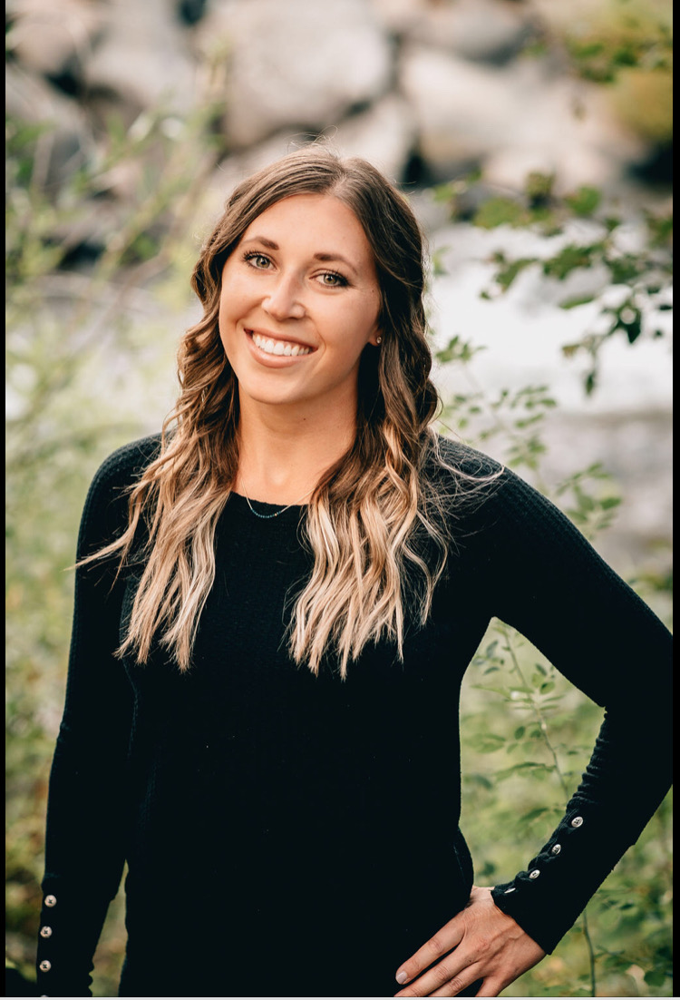

About Me
My name is Jaclyn Hardy but everyone calls me Jacki or Jack. I can't say that I grew up anywhere because my dad was in the Army and we spent most of my childhood moving from place to place. When my dad finished dental school, he retired from the military and started a practice in Gilbert, Arizona when I was 15. That became the place I come from and call home.
I guess I was determined to never settle down longer than a few years because I have kept changing locations every 2-4 years. After high school I went off to Eastern Arizona College and graduated with my Assosiates. From there I moved to Colorado and got a degree in Dental Hygiene. Next stop was Bend, OR.
I have lived in Bend for almost 4 years now and it has been my favorite place to live so far! Bend is one of the top growing cities for people that love outdoor recreation and that is what drew me here. I very much enjoy being outside doing things like: hiking, backpacking, snowboarding, cross country skiing, paddle boarding, mountain biking, etc.
My fiance and I have 3 dogs. The oldest is Gill who is a 4 year old Hungarian Viszla, then Nellie who is a 2 year old French Bulldog, and last but not least is Finn who is a year and a half year old Black lab/German short haired pointer mix. They are so much fun, a lot of work, and very entertaining. We have to keep them exercised since they have so much energy so we make frequent visits to the dog parks here in town and playing fetch any chance we get in the backyard.
I have been working as a Dental Hygienist for almost 4 years. I love my job but I also want a career that has more flexability to travel and work remote. So here I am in this bootcamp in this completely different world of tech vs. the comfortable world of medical. It is definitely a whole new language than what I am use to but I like it and am excited to learn everything about it.